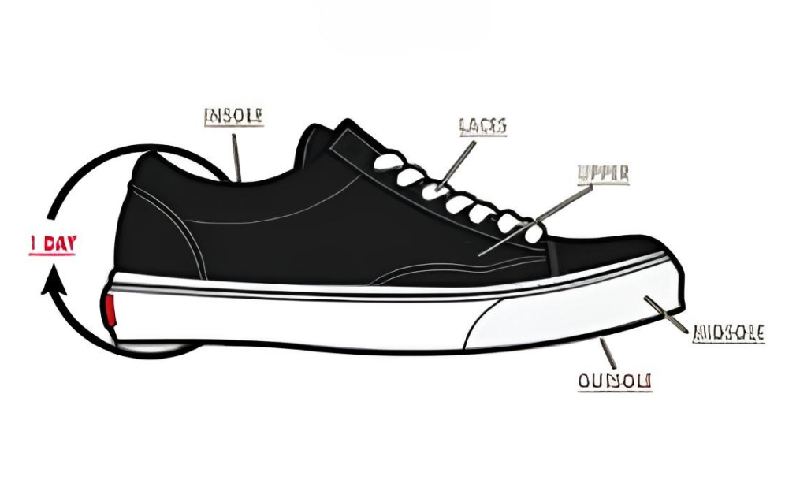
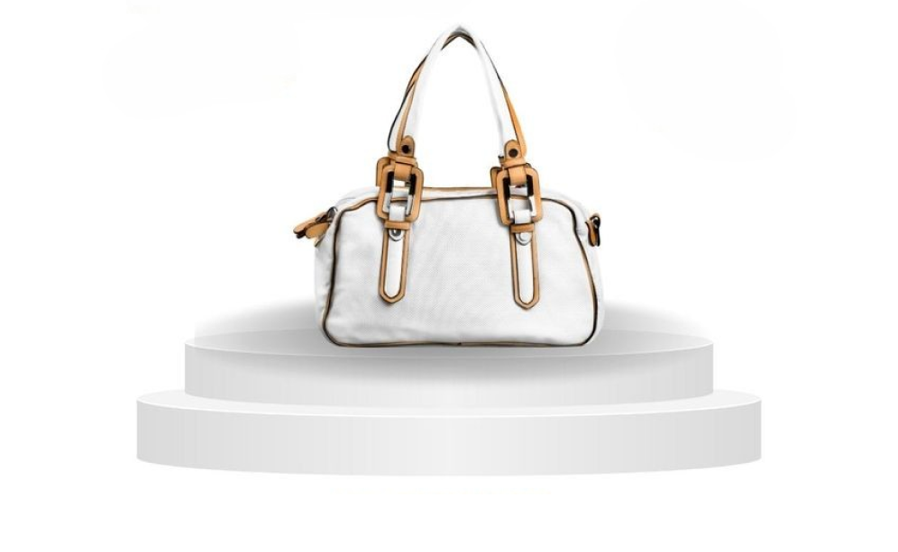
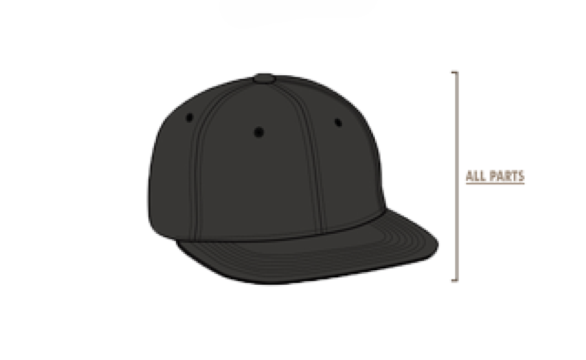

Layanan

Cuci Reguler
Rp20.000 - Rp30.000
Keterangan Layanan
- Treatment membersihkan / cuci sepatu secara cepat khusus untuk sepatu (lebih dikhususkan sneakers/loafers) aman untuk semua bahan dan warna.
- Pengerjaan dapat ditunggu di workshop.
- Dilakukan secara manual sehingga aman untuk semua jenis sepatu.
- Aman untuk semua bahan material dan warna sepatu karena menggunakan bahan alami dan teknik yang benar.
- Bagian yang di treatment : upper,midsole.
- Durasi pengerjaan +- 3 hari.(Silahkan konfirmasi lagi ke workshop)

Cuci Premium
Rp40.000 - Rp60.000
Keterangan Layanan
- Treatment pencucian khusus untuk sepatu secara detail untuk seluruh bagian, aman untuk semua bahan dan warna.
- Dilakukan secara manual sehingga aman untuk semua jenis sepatu.
- Aman untuk semua bahan material dan warna sepatu karena menggunakan bahan alami dan teknik yang benar.
- Bagian yang di treatment : upper,midsole,outsole,insole,laces
- Durasi pengerjaan +- 1 hari.(Silahkan konfirmasi lagi ke workshop)

Repaint/Recolor
Rp40.000 - Rp60.000
Keterangan Layanan
- Treatment pewarnaan khusus untuk boost sepatu, aman untuk bahan boost. Dilakukan untuk mengembalikan warna boost yang menguning.
- Treatment ini sudah mendapatkan Free Premium Clean.
- Dilakukan secara manual dan detail sehingga aman untuk sepatu.
- Aman untuk sepatu karena menggunakan pewarna khusus untuk boost dan teknik yang benar.
- Bagian yang di treatment : midsole boost
- Durasi pengerjaan +- 5 hari.(Silahkan konfirmasi lagi ke workshop)
- Warna dapat request sesuai keinginan dengan menanyakan langsung pada tim kami.

Repair(Perbaikan)
Rp40.000 - Rp60.000
Keterangan Layanan
- Sole Separation: Sol sepatu yang terlepas akan kami rekatkan dengan teknik terbaik.
- Scratch & Scuff: Menghilangkan goresan atau kerusakan kecil pada permukaan sepatu.
- Repaint & Restore: Pewarnaan ulang untuk sepatu yang warnanya memudar.
- Tear Repair: Menjahit kembali bagian sepatu yang sobek.
- Cleaning & Polishing: Pembersihan mendalam untuk hasil yang maksimal.
- Durasi pengerjaan +- 5 hari.(Silahkan konfirmasi lagi ke workshop)

Cuci Tas
Rp40.000 - Rp60.000
Keterangan Layanan
- Membersihkan noda, debu, dan kotoran pada tas dengan teknik khusus yang aman untuk semua jenis material, seperti kain, kulit, suede, dan sintetis.
- Menjaga keindahan tekstur dan warna asli tas Anda tanpa merusak struktur atau detailnya.
- Mengembalikan tampilan tas seperti baru dengan perawatan tambahan untuk aksesori seperti resleting, gesper, dan tali.

Cuci Topi
Rp40.000 - Rp60.000
Keterangan Layanan
- Membersihkan noda dan kotoran pada topi dengan teknik yang menjaga bentuk dan materialnya, baik untuk bahan kain, kulit, hingga bahan khusus seperti suede.
- Menghilangkan bau tak sedap pada topi sehingga nyaman dipakai kembali.
- Mengembalikan kecerahan warna topi tanpa memudarkan atau merusak desainnya.